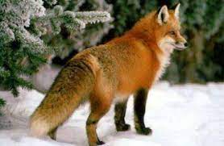

Түлкі
Кәдімгі түлкі Еуропаның барлық территориясында,Солтүстік Африкада,Азияның көптеген аумағында және Солтүстік Америкада кездеседі. Кәдімгі түлкі Аустралияда акклиматизациядан өтіп,содан бастап сол материкте кең таралған.
Түсі жирен, сұрғылт сары. Құлағының сырты қара не қара қоңыр, құйрығы ұзын (ұзындығы 60 см-дей), қысқа сирақты. Жүні тығыз әрі жұмсақ. Реңі жыл маусымына қарай өзгеріп отырады (түлейді): жоны мен бүйірі көбінесе сарғыш жирен, бауыры мен құйрығының ұшы ақшыл тартады. Тұрқы 70 – 77 см, салмағы 6,5 – 6,8 кг. Селдір орманды ашық жерлерді, өзен-көл жағалауларын, аңыз, тау баурайларын мекендейді. Күндіз інінде жатып, түнге қарай қорегін іздейді. Әдетте ұсақ жәндіктермен, көбінесе тышқандармен қоректенеді, қорегінің құрамында 300-ден астам жәндік пен ондаған өсімдік түрлері болады. Қаңтар – ақпан айларында ұйығып, 49 – 58 күннен кейін 4 – 6 (кейде 15) күшік туады.
